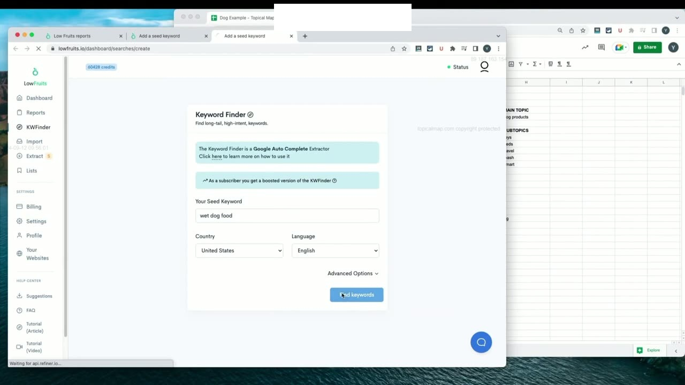
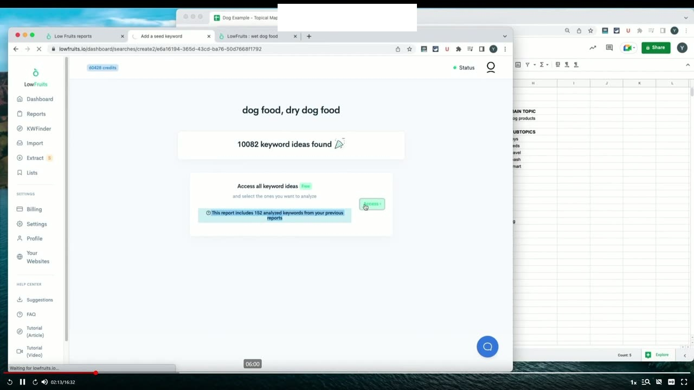
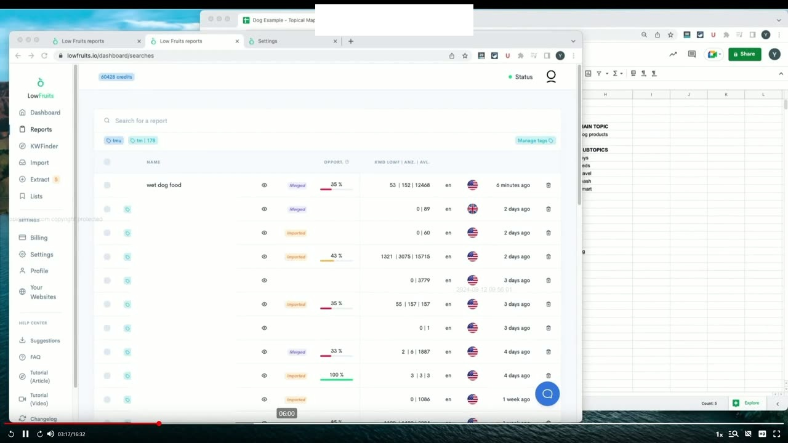
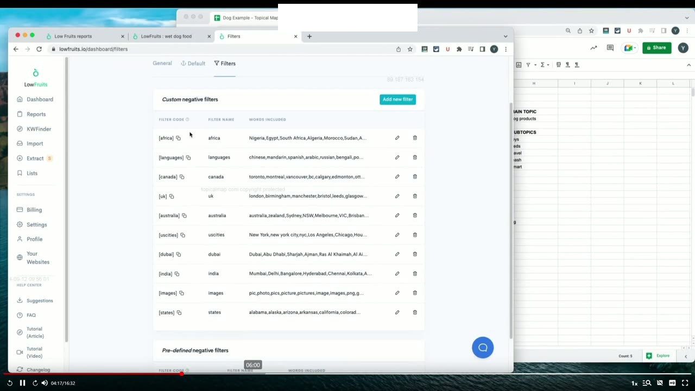
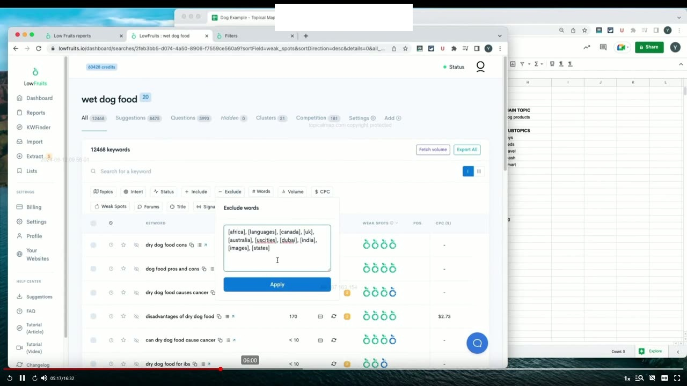
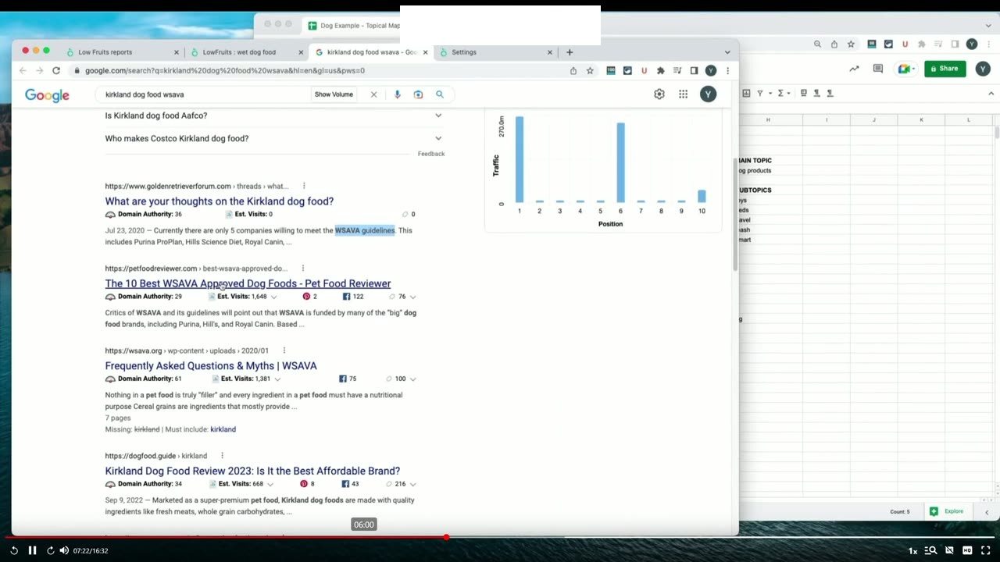
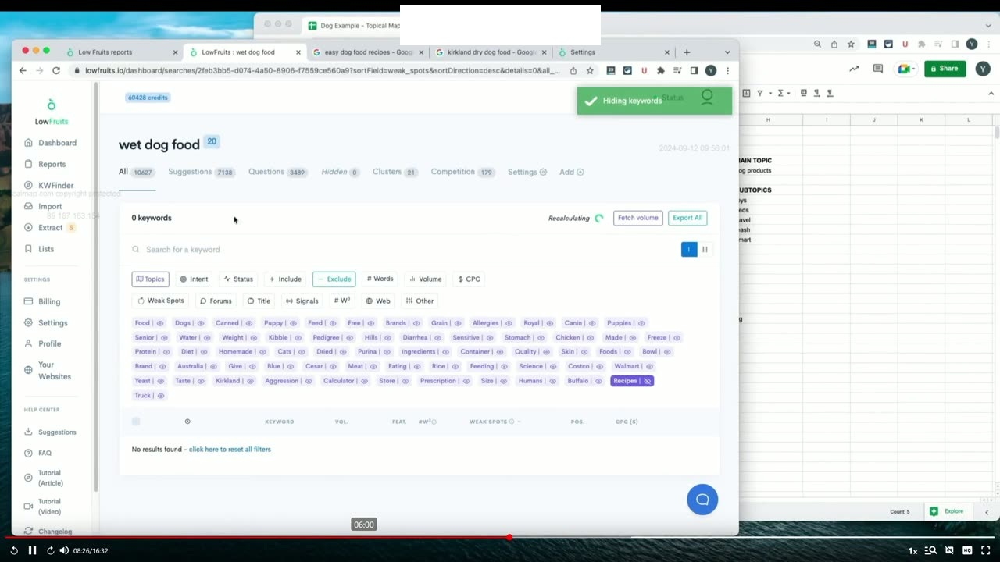
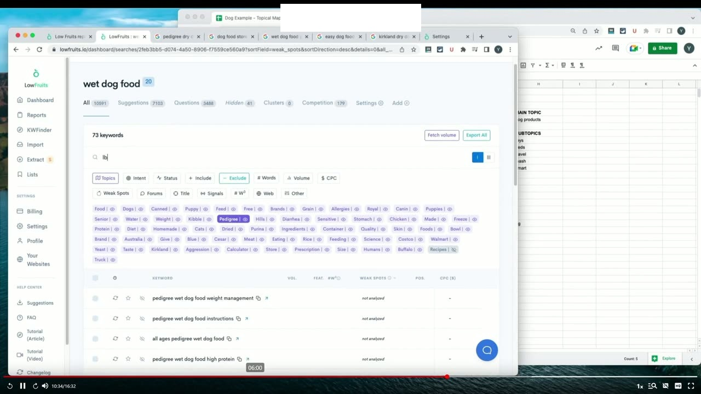
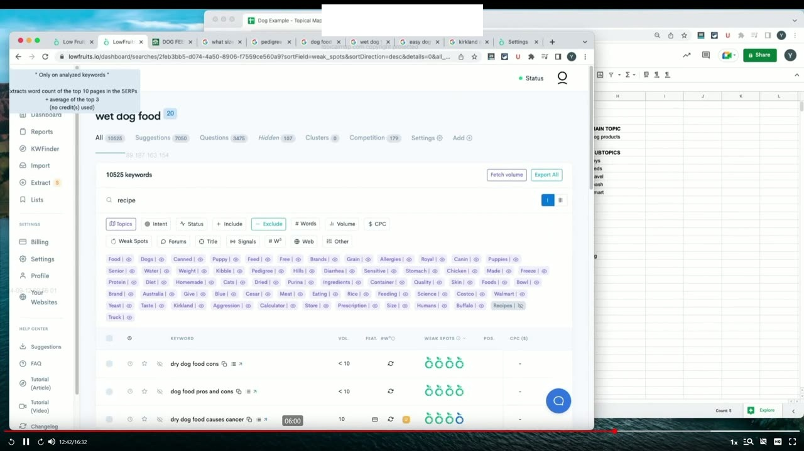
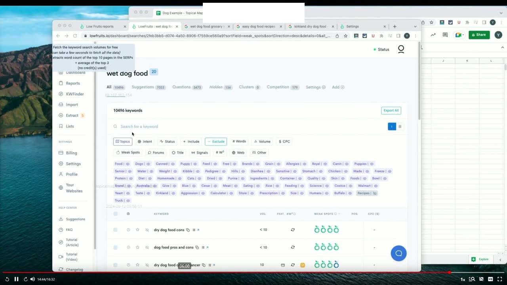

Researching and Gathering Keywords
1. Nhập từ khóa hạt giống đa luồng trong LowFruits Keyword Finder 2
Bây giờ chúng ta đã có trong tay danh sách đầy đủ các chủ đề chính (Main Topics) và chủ đề phụ (Subtopics) được xác định từ các bài học trước, bước tiếp theo là đi sâu vào chi tiết kỹ thuật thực tế để bắt đầu tìm kiếm các từ khóa thực sự. Chúng ta muốn lấy tất cả các chủ đề chính và chủ đề phụ này và đưa chúng vào công cụ LowFruits.io. Mục đích là để LowFruits có thể tự động quét và cào dữ liệu gợi ý từ tính năng Google Autocomplete (tự động hoàn thành), kết hợp với việc cào các câu hỏi People Also Ask (mọi người cũng hỏi) và các cụm tìm kiếm liên quan từ chính công cụ tìm kiếm Google.
Một tính năng cực kỳ tiện lợi và mạnh mẽ của LowFruits là họ cho phép bạn tìm kiếm tối đa 3 từ khóa gốc (seed keywords) cùng một lúc trong một lượt chạy. Điều này giúp tối ưu hóa thời gian chờ đợi thay vì phải chạy từng từ khóa đơn lẻ. Trong buổi thực hành này, Yoyao thực hiện tìm kiếm kết hợp giữa hai từ khóa thức ăn cho chó (dog food) và thức ăn khô cho chó (dry dog food) trên một tab, đồng thời mở một tab tìm kiếm khác trên công cụ để quét từ khóa thức ăn ướt cho chó (wet dog food).
Yoyao đặc biệt lưu ý: Bạn cần chắc chắn đặt tên mô tả rõ ràng cho từng báo cáo (ví dụ: ghi rõ dog food + dry dog food hoặc wet dog food) để dễ dàng quản lý và phân biệt. Khi hai tiến trình tìm kiếm này hoàn tất, bạn sẽ có thể gộp các báo cáo lại với nhau. Đó là một trong những tính năng tuyệt vời nhất của LowFruits: Cho phép bạn gộp nhiều đợt tìm kiếm độc lập và hệ thống sẽ tự động quét loại bỏ bất kỳ từ khóa trùng lặp nào được tìm thấy giữa các báo cáo. Trong khi tiến trình này đang diễn ra, bạn hoàn toàn có thể lặp lại điều tương tự cho tất cả các từ khóa khác trong chủ đề lớn về thức ăn cho chó. Toàn bộ quá trình quét thường chỉ mất từ một đến hai phút là hoàn tất.

2. Gộp các báo cáo độc lập (Merge Reports) để tự động khử trùng lặp
Sau khi hệ thống cào dữ liệu xong, Yoyao tiến hành truy cập vào hai báo cáo vừa tạo. Báo cáo này bao gồm khoảng 152 từ khóa đã được phân tích từ một báo cáo nghiên cứu trước đó mà ông từng thực hiện về thức ăn khô, do đó có rất nhiều từ khóa đã được điền sẵn số liệu.
Bây giờ, chúng ta chuyển sang phần quản lý Báo cáo (Reports) của tài khoản LowFruits. Tại đây, bạn tích chọn vào hai báo cáo vừa tạo và bấm nút Gộp báo cáo (Merge Reports) thành một báo cáo duy nhất. Tính năng thông minh này mang lại hai lợi ích vô giá:
- Tự động loại bỏ hoàn toàn các bản sao trùng lặp: Nếu một từ khóa xuất hiện ở cả hai đợt tìm kiếm thức ăn khô và thức ăn ướt, hệ thống sẽ tự động giữ lại đúng 1 bản ghi duy nhất, giúp tệp dữ liệu không bị phình to vô ích.
- Hợp nhất dữ liệu tập trung: Kết hợp toàn bộ từ khóa vào chung một bảng tổng hợp, giúp cho các thao tác lọc, phân loại, gắn nhãn và sắp xếp sau này trở nên cực kỳ dễ dàng khi chúng ta cần xuất dữ liệu ra bảng tính.
Khi quá trình gộp báo cáo hoàn tất, chúng ta nhấp mở báo cáo hợp nhất mới này ra. Kết quả hiển thị một con số khổng lồ: hơn 12.000 từ khóa tiềm năng đã được thu thập đầy đủ!

3. Thiết lập cấu hình bộ lọc phủ định mặc định (Negative Keywords Setting)
Đối mặt với một danh sách đồ sộ hơn 12.000 từ khóa thô, công việc quan trọng tiếp theo của chúng ta là phải đi qua và lọc bỏ tất cả những từ khóa mà chúng ta biết chắc chắn là không thực sự cần thiết cho mục tiêu nội dung của mình. Để làm được điều đó một cách chuyên nghiệp và tiết kiệm thời gian nhất, Yoyao hướng dẫn truy cập vào phần Cài đặt (Settings) của LowFruits để thiết lập Bộ lọc từ loại trừ mặc định (Default Negative Keywords).
Đây là những từ khóa loại trừ mặc định mà Yoyao đã dày công đúc kết và lưu sẵn trong tài khoản của mình qua hàng trăm dự án nghiên cứu từ khóa chuyên sâu:
- Các năm cũ đã lỗi thời: Loại trừ các năm như 2018, 2019, 2020, 2021... vì chúng ta đang tập trung xây dựng nội dung cập nhật mới nhất cho hiện tại và tương lai.
- Các từ khóa tìm kiếm tài nguyên đồ họa không phục vụ mục đích đọc hay bán hàng: Loại trừ các từ như logo, icon, vector, png, image, photo, wallpaper, clip art...
- Các vị trí địa lý nằm ngoài thị trường mục tiêu: Yoyao đã thiết lập sẵn danh sách loại trừ rất nhiều quốc gia và thành phố trên thế giới dựa trên nghiên cứu sâu rộng: tên các quốc gia và thành phố ở Châu Phi, tên các tỉnh bang và thành phố của Canada, các thành phố ở Vương quốc Anh, Úc, Hoa Kỳ, các tiểu bang, Dubai, Ấn Độ, cũng như các tệp tài liệu dạng pdf, doc...
Yoyao lưu ý: Việc sử dụng các bộ lọc địa phương này là cực kỳ hữu ích vì chúng ta không cần đến chúng trong một trang web cẩm nang toàn quốc. Tuy nhiên, nếu bạn đang làm SEO địa phương cho một khách hàng cụ thể tại một thành phố nhất định, rõ ràng bạn sẽ cần linh hoạt giữ lại các từ khóa gắn với thành phố mục tiêu đó.
Sau khi thiết lập xong bộ lọc phủ định mặc định, bạn chỉ cần quay lại báo cáo hợp nhất, dán danh sách từ loại trừ vào ô lọc và nhấn nút Áp dụng (Apply). Chỉ sau đúng một phút xử lý, hệ thống đã giúp chúng ta lọc sạch gần 2.000 từ khóa rác, đưa tệp dữ liệu từ hơn 12.000 xuống còn khoảng 10.000 từ khóa chất lượng hơn rất nhiều!

4. Khai thác Bộ lọc chủ đề (Topic Filter) để nhận diện các nhóm từ phổ biến
Sau khi đã loại bỏ được 2.000 từ khóa rác đầu tiên, chúng ta tiếp tục thử xem liệu có thể lọc thêm một số nhóm từ không cần thiết nữa hay không. Lúc này, tính năng Bộ lọc chủ đề (Topic Filter) của LowFruits phát huy tác dụng vô cùng kỳ diệu.
Khi bạn nhấp vào Bộ lọc chủ đề, công cụ sẽ tự động quét qua toàn bộ 10.000 từ khóa còn lại và hiển thị danh sách các từ ngữ thông dụng nhất xuất hiện với tần suất cao nhất trên toàn bộ tệp dữ liệu. Nó đóng vai trò như một chiếc kính lúp phân tích ngữ nghĩa, bóc tách cho bạn thấy người dùng đang nói về những chủ đề gì nhiều nhất.
Nhìn vào danh sách này, bạn sẽ nhận thấy có những từ khóa mà chúng ta thực sự không cần: ví dụ như tên của một số thương hiệu cụ thể hoặc các từ chỉ định vị trí địa lý. Chẳng hạn, khi nhấp vào từ Australia (Úc), nếu không có kết quả nào hiển thị thì lý do là vì chúng đã bị loại trừ bởi bộ lọc quốc gia trước đó, nhưng từ khóa đó vẫn xuất hiện trong danh sách thống kê vì nó vốn là một từ rất phổ biến trong dữ liệu gốc.
Bằng cách quan sát bảng thống kê tần suất từ này, bạn có thể nhanh chóng phát hiện ra các mẫu từ khóa lặp lại để lên kế hoạch xử lý hàng loạt thay vì phải ngồi đọc từng dòng một.

5. Phân tích ý định tìm kiếm SERP: Từ khóa điều hướng vs Cẩm nang đánh giá Kirkland
Yoyao đi sâu vào phân tích một trường hợp cụ thể rất điển hình: từ khóa thương hiệu Kirkland (nhãn hiệu thức ăn thú cưng độc quyền của chuỗi siêu thị bán sỉ Costco tại Mỹ). Thông thường, các từ khóa chứa tên thương hiệu riêng lẻ thường là từ khóa điều hướng (Navigational keywords) - người dùng tìm kiếm để truy cập thẳng vào trang sản phẩm của thương hiệu đó để mua hàng.
Tuy nhiên, khi kiểm tra kỹ lưỡng danh sách từ khóa thực tế, bạn sẽ thấy rằng không phải tất cả từ khóa thương hiệu đều mang tính điều hướng mua sắm đơn thuần. Chúng ta muốn giữ lại những từ khóa mang tính thông tin, đánh giá và cẩm nang, đồng thời loại bỏ những từ khóa chỉ nhằm mục đích tìm cửa hàng mua sắm.
Yoyao hướng dẫn cách kiểm chứng trực tiếp trên Google: Mở một tab tìm kiếm mới và gõ thử cụm từ kirkland dog food:
- Nếu kết quả tìm kiếm hiển thị các bài viết đánh giá chuyên sâu (Reviews), các câu hỏi thảo luận kinh nghiệm trên diễn đàn về thành phần dinh dưỡng và chất lượng: Điều đó chứng minh người dùng đang tìm kiếm cẩm nang tư vấn trước khi mua. Do đó, chúng ta hoàn toàn nên giữ lại các từ khóa này để sản xuất bài viết phân tích thành phần.
- Ngược lại, nếu kết quả tìm kiếm cho các từ khóa như thức ăn hạt khô Kirkland chỉ dẫn thẳng tới các trang danh mục sản phẩm của Costco hay Walmart: Người dùng lúc đó chỉ đang tìm nơi đặt mua hàng. Trong trường hợp đó, bạn có thể cân nhắc loại bỏ nếu không làm trang thương mại điện tử.
Việc kiểm tra nhanh SERP thực tế như vậy giúp bạn luôn đưa ra quyết định giữ hay xóa từ khóa một cách có cơ sở vững chắc, không bao giờ phải phỏng đoán cảm tính.

6. Loại trừ từ khóa công thức chế biến (Recipes) bằng Biểu tượng con mắt
Tiếp tục rà soát trong Bộ lọc chủ đề, Yoyao nhận thấy từ khóa recipe và recipes (công thức tự nấu thức ăn cho chó tại nhà) xuất hiện khá nhiều, ví dụ như: "công thức thức ăn cho chó dễ làm tại nhà". Câu hỏi đặt ra là: Chúng ta có đang tìm kiếm các công thức nấu ăn trong các chủ đề phụ của mình hay không?
Yoyao trả lời dứt khoát: Hiện tại thì không. Định hướng chiến lược của website thú cưng này đang tập trung vào việc đánh giá và tư vấn các dòng sản phẩm thức ăn hạt khô và ướt thương mại đóng gói sẵn trên thị trường. Chúng ta không thực sự muốn tạo một trang công thức nấu ăn vào thời điểm này. Có thể trong tương lai khi website mở rộng quy mô, chúng ta sẽ làm chủ đề đó sau; nhưng ngay bây giờ, cách tốt nhất là loại bỏ toàn bộ các từ khóa công thức để giữ cho tệp dữ liệu được tinh gọn và tập trung nhất.
Vậy làm thế nào để loại bỏ nhanh chóng tất cả các từ khóa chứa chữ công thức? Cách dễ dàng và nhanh nhất trong LowFruits là sử dụng Biểu tượng con mắt (Hide Keyword):
- Bạn chỉ cần nhấp vào biểu tượng con mắt bên cạnh từ
recipes. Ngay lập tức, tất cả 35 từ khóa có chứa chữ recipes sẽ bị ẩn hoàn toàn khỏi báo cáo! - Sau đó, nhấp vào để bỏ chọn bộ lọc và kiểm tra dạng từ số ít
recipe. Bạn sẽ thấy vẫn còn khoảng 29 từ khóa chứa chữ recipe số ít. - Bạn thực hiện thao tác tương tự: Sử dụng tính năng Chọn hàng loạt (Bulk selection) trên tất cả các trang, hệ thống sẽ tự động chọn trọn vẹn 29 từ khóa đó và bạn chỉ cần nhấn nút Ẩn (Hide).
Chỉ sau hai cú nhấp chuột đơn giản, toàn bộ 64 từ khóa về công thức nấu ăn đã được loại bỏ sạch sẽ ra khỏi tầm mắt, giúp đội ngũ không bị phân tâm.

7. Loại bỏ từ khóa thương mại điện tử bao bì lớn: Mẫu từ chung LB (Pounds)
Tiếp theo, Yoyao chia sẻ một kỹ thuật phân tích mẫu từ ngữ chung cực kỳ thông minh để xử lý hàng loạt từ khóa thương mại điện tử không mong muốn:
Khi quan sát từ khóa thương hiệu Payday, ông thấy có nhiều người tìm kiếm các cụm từ như: "payday dry dog food 50 lb bag" hay "55 lb bag" (bao thức ăn cho chó nặng 50 pound hoặc 55 pound). Khi kiểm tra các trang hiển thị trên Google cho những truy vấn này, toàn bộ trang nhất đều là các sàn thương mại điện tử khổng lồ như Sam's Club, Walmart, Amazon, Costco. Đây là những từ khóa chỉ nhằm mục đích mua bao bì cỡ lớn mà người làm nội dung cẩm nang không cần đến.
Thay vì ngồi xóa từng từ khóa đơn lẻ, Yoyao tìm điểm chung của chúng: Đó là chữ lb (viết tắt của pound - đơn vị đo khối lượng tại Mỹ). Khi ông nhập chữ lb vào ô bộ lọc, công cụ lập tức hiển thị ra hàng trăm từ khóa của rất nhiều thương hiệu khác nhau đang tìm kiếm kích thước bao bì cụ thể. Ông sử dụng tính năng Chọn hàng loạt trên tất cả các trang (Select all pages) và nhấn Ẩn đồng loạt toàn bộ các từ khóa này chỉ trong vài giây!
Điều này chứng minh tư duy lọc dữ liệu đỉnh cao: Luôn tìm kiếm các mẫu từ viết tắt, đơn vị đo lường hoặc định dạng bao bì chung để dọn dẹp hàng ngàn từ khóa rác trong chớp mắt.

8. Quyết định giữ lại các câu hỏi thắc mắc về thương hiệu lớn như Purina
Trái ngược với việc loại bỏ các từ khóa thương mại điện tử bao bì lớn, đối với những thương hiệu thức ăn thú cưng khổng lồ và phổ biến bậc nhất như Purina, Yoyao lại quyết định giữ lại:
Lý do chiến lược là vì người tiêu dùng có vô vàn câu hỏi thắc mắc xoay quanh chất lượng thực sự của thương hiệu này: "Liệu thức ăn cho chó của Purina có tốt không?", "Thành phần dinh dưỡng trong hạt Purina có an toàn không?", "Chó bị viêm da có nên ăn Purina Pro Plan không?"...
Những câu hỏi này phản ánh nhu cầu tìm kiếm lời khuyên chuyên môn độc lập từ các chuyên gia trước khi khách hàng ra quyết định mua hàng. Bằng việc giữ lại nhóm từ khóa này, bạn sẽ có thể sản xuất những bài viết đánh giá khách quan, phân tích sâu về bảng thành phần dinh dưỡng, từ đó thu hút được lượng độc giả tiềm năng có mức độ quan tâm rất cao đến sức khỏe thú cưng.

9. Trích xuất toàn bộ dữ liệu lưu lượng tìm kiếm (Search Volume) và CPC
Sau khi đã hoàn tất các bước lọc sơ bộ và loại bỏ các nhóm từ khóa không liên quan (như mèo, phụ kiện đồ chơi, xe tải vận chuyển, bóng, đồ đựng thức ăn...), Yoyao tiến hành kích hoạt tính năng Lấy dữ liệu lưu lượng (Fetch Volume Data) trong LowFruits.
Hệ thống sẽ tự động gửi lệnh truy vấn để lấy dữ liệu khối lượng tìm kiếm hàng tháng (Search Volume), giá thầu quảng cáo (CPC) và phân loại ý định tìm kiếm (Search Intent) cho toàn bộ danh sách từ khóa đã được tinh lọc. Yoyao khuyên người học không cần phải quá cầu toàn cố gắng lọc sạch 100% ngay trên giao diện web, bởi vì khi xuất dữ liệu ra bảng tính Google Sheets, bạn sẽ có không gian hiển thị rộng rãi hơn nhiều để sắp xếp và xóa bỏ các từ khóa thừa.

10. Xuất toàn bộ dữ liệu (Export All) và Chuẩn bị bước phân tích chuyên sâu
Khi quá trình cập nhật số liệu lưu lượng hoàn tất, Yoyao nhấn vào nút Export All (Xuất tất cả) để tải toàn bộ tệp dữ liệu về máy tính.
Ông giải thích lý do tại sao không nên vội vã bấm nút phân tích SERP hoặc phân cụm tự động ngay từ đầu: Nếu bạn vội vã phân tích ngay khi tệp dữ liệu còn chứa 12.000 từ khóa thô, bạn sẽ lãng phí hàng ngàn credit vô ích cho những từ khóa rác mà bạn vốn dĩ sẽ xóa đi! Việc lọc sơ bộ trước rồi mới xuất dữ liệu giúp bạn tiết kiệm tối đa ngân sách và chỉ tập trung tài nguyên tính toán vào những từ khóa thực sự có giá trị.
Yoyao kết thúc bài học với một lời khuyên thực tế: Hãy luôn chuẩn bị một cuốn sổ tay nhỏ bên cạnh để ghi lại các từ khóa độc đáo và quy tắc lọc mới phát hiện trong quá trình làm việc. Toàn bộ tệp dữ liệu sạch bây giờ đã sẵn sàng để bước sang bài học gom cụm tiếp theo.

Nguồn và đối chiếu
- Topical Maps Unlocked 2.0 · 06-Researching and Gathering Keywords (Video bài học chính).
- Bản tiếng Anh không có video riêng cho bài học này; nội dung đối chiếu trực tiếp từ slide và video chính.